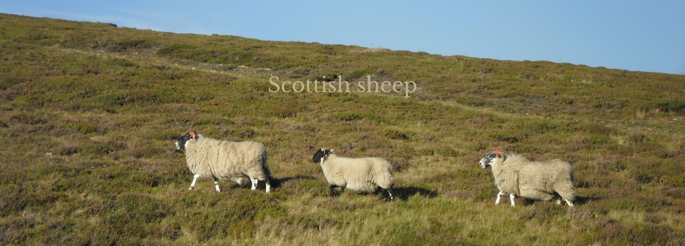

Communication Failure
Nov 12, 2020 4 Minutes
So you’ve read about culture and know what intercultural communication is but you’re still not sure why any of this is important and how it can make your life better. Let me tell you about the time, I was very rude by accident.
What happened?
I met a woman from Chile in a class I took at University. We got along well and often chatted before the lessons. When I met her in the hallway one day, we stopped to chat some more. It was an interesting conversation, yet, only a few minutes into it, I excused myself and left. I could see by the expression on my classmate’s face that she was offended by my rude behaviour.
Later when I thought about it, I had to agree with her, especially, since I did not understand why I had felt the overwhelming urge to walk away in the first place. I liked the other student. She was nice and I enjoy talking to people. I am not a rude person in general and I was not in a hurry that day.
So, I sat down and tried to figure out what had happened.
Questions
Why did I walk away?
The simple answer was because I really wanted to. In fact, the urge to leave was so strong that it overwrote my natural politeness and
even curiosity in other people’s stories.
How did I feel just before I left?
Very uncomfortable.
What made me uncomfortable? Something the other student said?
I went over our conversation carefully, remembering as much of it as possible. But it had just been
the usual chitchat about classes and workloads. Nothing strange or even remotely upsetting.
Something the other student did?
And there it was. I remembered that we had stood very close to each other, closer than I normally
stand to other people. For me the comfortable distance to anyone is at least one arm-length. I also remembered
that I had shifted my weight backwards to get some distance between us but that she had moved with me. At the time,
I did not notice any of this, but it did make me uncomfortable.
The bigger “problem” once I revisited the scene was, however, that the student gesticulated a lot, waving her hands in front of my face. As soon as I remembered this detail, I understood that her gestures so close to my face had triggered my flight instinct. Without realising it, a part of my brain considered the movement in front of my face a danger. On a subconscious level I had been worried that she would hit me in the face.
Once I understood this, I laughed, like you probably do reading this right now. Of course she would not have slapped me. Thinking back, I know this. But I still reacted as if she was a real threat and removed myself from the situation by making an excuse. I acted automatically.
Consequences
Our expectations have consequences and influence our behaviour, whether we are aware of it or not. I did not know that I gave in to an unreasonable fear when I made an excuse and walked away. I did not understand that I felt uncomfortable because the student from Chile talked differently (she stood closer to me and used expansive gestures) than what I was expecting. And I was rude to her because I did not realise any of this.
Once I became aware of my expectations, and in this case, unfounded fears, they did not magically disappear. Sorry, figuring out what is happening will not make your feelings and automatic reactions go away. That’s not how it works. But once you know what is going on, you can adapt.
The next time I met my classmate in the hallway we talked again. The gestures she made in front of my face still made me want to lean and even step back, to get distance between myself and the “danger”, and I still felt uncomfortable. But I also knew that this was an unfounded fear I did not have to act on. I could ignore it because I knew gestures were merely part of her way to talk and she was not going to hit me in the face.
Analyse a situation
Finding out what exactly happens when a communication goes wrong can help you understand others as well as yourself so you can decide how you really want to behave. So, if you find yourself in a situation when communication fails, ask yourself the following questions:
- What happened? Describe in as much detail as possible who was there, what they said and did, what you said and did, and what the result of the communication was. Don’t forget, communication is not just verbal!
- How did you feel during the conversation?
- How did you feel afterwards?
- At which points did your feelings change?
- What did the other person/people do or say to cause this change?
Like everything else in life, analysing conversations gets easier the more you do it. It can also be a lot of fun when you realise how silly we sometimes behave. And as a bonus you learn a lot about yourself and other people.